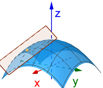

Tangent Planes
Recall from Calc 1 that we defined the derivative of a function \(y = f(x)\) at the point \(x=a\), using the limit definition of the difference quotient as \(h \rightarrow 0\), as the slope of the line that was tangent to \(f\) at the point \((a,f(a))\).
If the limit didn't exist, then we said \(f\) was not differentiable at \(x=a\). A common example of such a situation was if \(f\) had a cusp, or sharp corner.
We can extend this idea of differentiable points and tangent lines to multiple variable functions. A function of two variables \(z = f(x,y)\) represents a surface in 3D space. We have already seen that the partial derivatives \(f_x\) and \(f_y\) represent the slopes of the tangent lines in the \(x\) and \(y\) directions, respectively. If we combine these partial derivatives to form a plane, we get a plane that is tangent to \(f(x,y)\) at a point \((x_0,y_0,z_0)\).
And just as there were points where \(y = f(x)\) was not differentiable, there are also points where \(z = f(x,y)\) will not be differentiable.
Given an explicitly defined function \(z = f(x,y)\), the equation of the tangent plane to \(f\) at the point \((x_0,y_0,z_0)\) is given by the following plane equation.
\[z = f_{x}(x_0,y_0)(x-x_0) + f_{y}(x_0,y_0)(y-y_0) + z_0\]Given an implicitly defined function \(F(x,y,z) = 0\), the equation of the tangent plane to \(F\) at the point \((x_0,y_0,z_0)\) is given by the following plane equation.
\[F_{x}(x_0,y_0,z_0)(x-x_0) + F_{y}(x_0,y_0,z_0)(y-y_0) + F_{z}(x_0,y_0,z_0)(z-z_0) = 0\]Note that these two equations will result in the same plane equation for explicitly defined functions since the explicit function can be written as \(F(x,y,z) = f(x,y) - z = 0\).
The following videos give some more details and some examples.
Linear Approximations
A common application of tangent lines is to use the equation of the tangent line to approximate the values of the function at some point near the point where we computed the derivative, which is a technique we learn about in Calc I. Observe in the image below that the red line is tangent to the function \(y = f(x)\) at the point \((a,f(a))\). A short distance away, a point on the line is not far from the corresponding point on the function - this is the approximation. It is a fairlyaccurate approximation if we remain relatively close to \((a,f(a))\). The equation of the tangent line approximation is \(L(x) = f'(a)(x-a) + f(a)\).
We can apply this same idea to a function \(z = f(x,y)\), except we must use the tangent plane.
The equation of the linear approximation for a function \(z = f(x,y)\) from the point \((a,b,f(a,b))\) is given below.
\[L(x,y) = f_{x}(a,b)(x-a) + f_{y}(a,b)(y-b) + f(a,b)\]Notice the similarity between this linear approximation using a plane and the linear approximation from Calc I.
The following videos give some more details and some examples.
Differentials
Another common application of the tangent line is the differential. In Calc 1, give a function \(y = f(x)\), we used the differentials of \(f\), which are \(dy\) and \(dx\), to approximate the change in \(y\) for small changes in \(x\). If we let \(dx = \Delta x\), meaning that the differential \(dx\) represents a small change in \(x\), then we can approximate the change in \(y\) using the differential, or \(\Delta y \approx dy\). The formula for the differential \(dy\) comes from the derivative notation \(\frac{dy}{dx} = f'(x)\), which results in \(dy = f'(x) dx\) when solving for \(dy\). Back in Calc 1, this gave us the following differential equation and approximation.
\[\Delta y \approx dy = f'(x) dx\]The idea here again is that the change in \(y\) can be approximated by the tangent line over a small change in \(x\). We can apply this same idea to functions of two variables.
Given a function \(z = f(x,y)\), the differentials \(dz\), \(dy\) and \(dx\) combine together into the following equation.
\[dz = f_{x}dx + f_{y}dy\]Using this equation, we can compute the approximate change in \(z\) for small changes in \(x\) and/or \(y\), which can be expressed using the following formula.
\[\Delta z \approx dz = f_{x}dx + f_{y}dy\]Note that when we talk about the change in the values of a function, there are three types of change we will discuss.
- Actual Change: \(\Delta z\)
- Approximate Change: \(dz\)
- Relative (or Percent) Change: \(\frac{dz}{z}\)
The following videos give some more details and some examples.